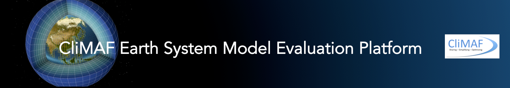

Comparison setup: target_comparison
PCMDI Metrics - Atmosphere - Parallel coordinates
Atmosphere - surface
Atmosphere - standard pressure levels
Atmosphere - Zonal means
NEMO
NEMO - zonmean
Atmosphere - Atlantic
Focus Atlantic Atmosphere for AMOC
PISCES
ORCHIDEE
ENSO
Monsoons
TurbulentAirSeaFluxes
Atlas Explorer
Essentials_CM6011_CM6012